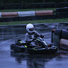

Undone — the hero is back to its previous image with no top-anchored crop.

i like the look of this. sleek, clean, and modern
This is a real shift from the current dark lime look, so let me pin the scope first.
Rebuilding the whole page in that clean editorial system, with light/dark themes and dark as default — let me pull the sections I haven't got in view first.
Rebuilding the page in that editorial system with a light/dark toggle (dark by default) — starting with the theme foundation and new shared pieces.
Approved: bash.
The whole landing page is rebuilt in that editorial system — serif headlines, mono labels, hairline panels, dashed cards with corner ticks, and concentric-arch motifs — with the hero image kept as a framed panel.
Also added a Proven at Scale band under the hero, and a sun/moon toggle in the nav (and on the legal pages) that switches the cream and near-black palettes, defaulting to dark and remembering the choice.
i like it, but may be slightly too editorial and does nto fit the brand. dial it back, schose an easier to read font. proven at scale should include 6k instagram views. over 2k website views, and 25 dedicated testers.
Dialing back the serif editorial feel for a cleaner, more readable type system, and swapping in your three real metrics.
Headlines are now a clean semibold sans (Inter) instead of the serif, so the page reads much closer to the brand while keeping the hairline/dashed layout, and Proven at Scale now shows 6K Instagram views, 2K+ website views and 25 dedicated testers.
smooth scrolling - elements fade up as you scroll
Adding a scroll-reveal fade-up for section content — let me look at the current sections first.
Adding a reusable scroll-reveal wrapper and wiring it into the page sections.
Sections now ease in with a soft fade-up as you scroll — staggered per block (heading, then cards, then footer), with the hero animating on load, and unchanged for anyone with reduced-motion enabled.
make it cleaner on mobile. its too cluttered with small not useful test
Let me check what's showing on mobile in the nav and hero before trimming.
Cleaning up the mobile layout — single-row header, hidden micro-labels, tighter spacing.
Mobile is much lighter now: a single-row header with just the brand, theme toggle and Get App (no second link strip), the duplicate section kickers and tiny mono micro-labels hidden on small screens, full-width CTAs, and tighter section padding and card spacing.
should be [RACESENSE] which is the logo. white text
Swapping the logo mark for the bracketed wordmark in white.
The nav logo is now the bracketed [ RACESENSE ] wordmark in pure white (it falls back to the dark ink in light theme so it stays visible).
add an instagram link to race.sense.app
Adding an Instagram link to the footer link row.
Added an INSTAGRAM link to the footer row (opens instagram.com/race.sense.app in a new tab).
add sitemap.xml
Added a sitemap covering the home, FAQ, terms and privacy pages, served at /sitemap.xml. It's written against racesense.info — once the app is published, tell me the final domain if it differs and I'll swap the URLs.
add an instagram button next to the dark/lightmode button in the top right
An Instagram icon button now sits directly left of the theme toggle in the top right, styled to match it.
Build a new RaceSense Driver Profiles feature that fits seamlessly into the existing RaceSense brand and website.
Create public, shareable driver profile pages for karting drivers. The feature should feel like a polished motorsport product, not a generic social profile or SaaS dashboard.
Use the existing RaceSense visual identity:
Create a public profile page at:
/driver/:username
The profile should contain:
Header
Stats section Display:
Only display statistics that actually have data. Do not fabricate statistics or show meaningless zero-filled dashboards.
Recent Results Show a clean list/table containing:
Make this particularly easy to scan on mobile.
Performance Include a simple section for useful RaceSense statistics where data exists, such as:
Do not over-engineer this section. It should be easy to replace or expand when RaceSense gets its new backend.
Tracks Show tracks the driver has raced at, with:
Create a simple private edit-profile page.
Allow the driver to edit:
Keep authentication extremely simple and use the existing Base44 authentication only where necessary.
IMPORTANT:
This feature must be designed so that it can be easily migrated away from Base44 in the future.
Do NOT build complex Base44-specific relationships, workflows or business logic.
Keep the driver profile data in a simple, clearly structured model with obvious fields and relationships.
Avoid:
Building a Driver Profiles feature on the existing RaceSense design system — I'll add two simple data tables, a public profile page, and a private editor. First, a look at the current page chrome so the new pages match.
Data model and the migration-friendly data layer are in. Now the profile UI components.
Now some sample driver data so the feature is visible, and an on-brand avatar.
Driver Profiles are live: /driver/ethancole and /driver/miafraser show a public profile (photo or initials, race number, team, country, bio, stats, recent results, performance, tracks) plus a private editor at /edit-profile where a signed-in driver sets name, handle, photo, number, team, region and bio — profiles are shareable via a native share sheet or copied link. Profile photos upload through the editor and are stored publicly — each file gets a permanent public URL that never expires, and anyone with the link can access it, which is what a public shareable profile needs.
Two sample drivers with fictional results are seeded so you can see it working — say the word and I'll clear them. All backend access lives in one small module (plus pure stat maths in another), so swapping to the new RaceSense backend means rewriting those two files and nothing in the UI. Right now anyone signed in could edit any driver record; I can lock it down to owner-only when you want.
allow people to add links to their profile
I'll wire up editable profile links. Let me look at the current profile files first.
Adding a links editor, public display, and the storage field for it.
Add two links to the sample driver profile
Drivers can now add up to six links in the profile editor — label plus URL, with https:// added automatically — and they show as tappable buttons under the bio on the public profile (blank labels fall back to the site name). The sample profile has two seeded links so you can see it, and everything saves through the same plain data layer.
must fit all on one line on mobile
Reading the nav to see what's wrapping on mobile.
At 373px the row overflows, so I'll tighten the header spacing and logo on mobile only.
The header now fits on one line at mobile width — tighter padding, gaps, logo tracking and a slightly smaller Instagram button and GET APP pill, with the desktop sizes unchanged.
add a leaderboards section, as well as an easy way to access driver profiles
Checking the existing driver data layer and page structure before adding the section.
Checking the shared section wrapper and what driver data exists.
I'll add a live standings section and a browsable driver directory, both linking straight into the profiles.
Now wiring the new routes and nav entry points.
Added a live leaderboard section on the home page — drivers ranked by points (25-18-15-12-10-8-6-4-2-1 for a top-ten finish) with races, wins, podiums and best lap, plus a points column kept visible on mobile; every row opens that driver's profile. There's also a new /drivers directory of all profiles, reachable from the nav ("STANDINGS"), the leaderboard's "ALL DRIVERS" button, and the footer links on both the home and driver pages.
replace placeholder names with "Harry Bedford" driving for Racesense. races should be 1. wins should be 1. podiums 1, remove the best lap column in place of win rate percentage. also swap mia fraser to "John regular" with 0,0 stats as a placeholder
Updating the sample drivers' data and swapping the best-lap column for win rate.
The standings now read Harry Bedford — RaceSense, 1 race, 1 win, 1 podium, 100% win rate, 25 pts — above John Regular on 0s with "—" for win rate, and the best-lap column is replaced by WIN RATE.
best lap time is a 43.500 at Qleisure - Brighton Karting
Harry Bedford's win now reads Qleisure - Brighton Karting (Brighton, UK) with a 43.500 best lap, so his profile shows that lap in the stats, results and track list.
add a button to access leaderboards on the hero/header somwhere
The hero now has a third button — a trophy-marked LEADERBOARD that jumps straight to the standings, stacked under the app and audio buttons on mobile.